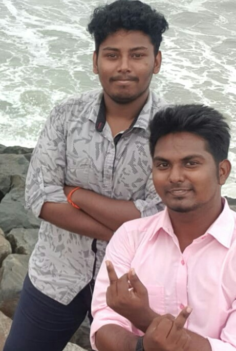

T Sathish Kumar on the left & T Mathivanan on the right, showing off their signature poses to attract someone of the same or opposite sex.
Here's a time line of the legends' lives:
1999 & 2000 Born in Pondichery and Salem respectively.
2002 Mathi starts discharging cum at an extremely young age.
2006 Sathish starts to cum,a bit late than mathi,still at an extremely young age. Now both have realized that their peepee was not only meant for peeing.
2007 Both of them haven't met yet,but both of them discover at the same time that their cum wasn't supposed to be green.
2008 Mathi stops producing semen and his peepee starts to shrink. Mathi realizes he was a hermaphrodite all the time. He still couldn't come out to his parents as he was just Eight and scared. But he feels he doesn't have the need to change his name as it was unisexual.
2009 Sathish, now a 10-year old,unable to control his urge, sets off to chennai, looking for a soul-mate.
2012 He discovers Mathi, now a female, with a fully grown set of ovaries and a uterus. Both start to love each other,
2015 Sathish confesses that he cums in green and is not a normal human. Mathi, in a state of shock and surprise, also confesses that his cum also was green, and was a male a few years back. Sathish passionately makes love to Mathi in the last seat of government bus.
2016 - Mathi,now 4 months pregnant, is rushed to a hospital, where he hatches 2 eggs instead of giving birth like a mammal. The doctor was shocked after seeing the eggs, and suffered a stroke after looking at the shrunk peepee of mathi.
2016 Both realize that they are reptiles and name their 2 children as Sathivanan and Mathish Kumar. They become responsiple parents and raise them with utmost care.
2017 Their neighbour discovers Sathish's green cum stained pants and alerts the police.
2017 Both of the confess to the police about their sexual orientation. Sathish pledges to danate his sperms and mathi pledges to be a surrogate. The scientists discover that they have the genetic lineage of dinosaurs and they are taken to the Indian Medical Association(IMA).
2018 - Mathi gives birth to 700 males and 600 females, and is hailed as a boon to the research field.
2019 - After giving birth to 6969 dinosaurs, Mathi dies of exhaustion.
2020 - Mathi was given the posthumous 'sex monster' award by the IMA. Her legacy will remain immortal forever.
If you have time, you should read more about this incredible human being
on his
Wikipedia profile.